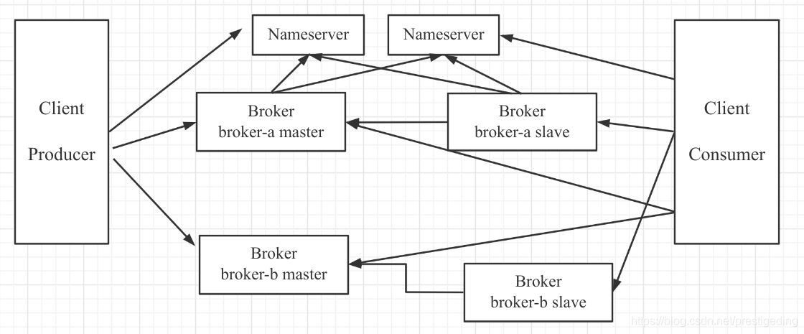

- 01 搭建学习环境准备篇.md.html
- 02 RocketMQ 核心概念扫盲篇.md.html
- 03 消息发送 API 详解与版本变迁说明.md.html
- 04 结合实际应用场景谈消息发送.md.html
- 05 消息发送核心参数与工作原理详解.md.html
- 06 消息发送常见错误与解决方案.md.html
- 07 事务消息使用及方案选型思考.md.html
- 08 消息消费 API 与版本变迁说明.md.html
- 09 DefaultMQPushConsumer 核心参数与工作原理.md.html
- 10 DefaultMQPushConsumer 使用示例与注意事项.md.html
- 11 DefaultLitePullConsumer 核心参数与实战.md.html
- 12 结合实际场景再聊 DefaultLitePullConsumer 的使用.md.html
- 13 结合实际场景顺序消费、消息过滤实战.md.html
- 14 消息消费积压问题排查实战.md.html
- 15 RocketMQ 常用命令实战.md.html
- 16 RocketMQ 集群性能摸高.md.html
- 17 RocketMQ 集群性能调优.md.html
- 18 RocketMQ 集群平滑运维.md.html
- 19 RocketMQ 集群监控（一）.md.html
- 20 RocketMQ 集群监控（二）.md.html
- 21 RocketMQ 集群告警.md.html
- 22 RocketMQ 集群踩坑记.md.html
- 23 消息轨迹、ACL 与多副本搭建.md.html
- 24 RocketMQ-Console 常用页面指标获取逻辑.md.html
- 25 RocketMQ Nameserver 背后的设计理念.md.html
- 26 Java 并发编程实战.md.html
- 27 从 RocketMQ 学基于文件的编程模式（一）.md.html
- 28 从 RocketMQ 学基于文件的编程模式（二）.md.html
- 29 从 RocketMQ 学 Netty 网络编程技巧.md.html
- 30 RocketMQ 学习方法之我见.md.html
- 捐赠
02 RocketMQ 核心概念扫盲篇
在正式进入 RocketMQ 的学习之前，我觉得有必要梳理一下 RocketMQ 核心概念，为大家学习 RocketMQ 打下牢固的基础。
RocketMQ 部署架构

在 RocketMQ 主要的组件如下。
NameServer
NameServer 集群，Topic 的路由注册中心，为客户端根据 Topic 提供路由服务，从而引导客户端向 Broker 发送消息。NameServer 之间的节点不通信。路由信息在 NameServer 集群中数据一致性采取的最终一致性。
Broker
消息存储服务器，分为两种角色：Master 与 Slave，上图中呈现的就是 2 主 2 从的部署架构，在 RocketMQ 中，主服务承担读写操作，从服务器作为一个备份，当主服务器存在压力时，从服务器可以承担读服务（消息消费）。所有 Broker，包含 Slave 服务器每隔 30s 会向 NameServer 发送心跳包，心跳包中会包含存在在 Broker 上所有的 Topic 的路由信息。
Client
消息客户端，包括 Producer（消息发送者）和 Consumer（消费消费者）。客户端在同一时间只会连接一台 NameServer，只有在连接出现异常时才会向尝试连接另外一台。客户端每隔 30s 向 NameServer 发起 Topic 的路由信息查询。
温馨提示：NameServer 是在内存中存储 Topic 的路由信息，持久化 Topic 路由信息的地方是在 Broker 中，即
${ROCKETMQ_HOME}/store/config/topics.json。
在 RocketMQ 4.5.0 版本后引入了多副本机制，即一个复制组（m-s）可以演变为基于 Raft 协议的复制组，复制组内部使用 Raft 协议保证 Broker 节点数据的强一致性，该部署架构在金融行业用的比较多。
消息订阅模型
在 RocketMQ 的消息消费模式采用的是发布与订阅模式。
- Topic：一类消息的集合，消息发送者将一类消息发送到一个主题中，例如订单模块将订单发送到 order_topic 中，而用户登录时，将登录事件发送到 user_login_topic 中。
- ConsumerGroup：消息消费组，一个消费单位的“群体”，消费组首先在启动时需要订阅需要消费的 Topic。一个 Topic 可以被多个消费组订阅，同样一个消费组也可以订阅多个主题。一个消费组拥有多个消费者。
术语解释起来有点枯燥晦涩，接下来我举例来阐述。
例如我们在开发一个订单系统，其中有一个子系统：order-service-app，在该项目中会创建一个消费组 order_consumer 来订阅 order_topic，并且基于分布式部署，order-service-app 的部署情况如下：

即 order-service-app 部署了 3 台服务器，每一个 JVM 进程可以看做是消费组 order_consumer 消费组的其中一个消费者。
消费模式
那这三个消费者如何来分工来共同消费 order_topic 中的消息呢？
在 RocketMQ 中支持广播模式与集群模式。
- 广播模式：一个消费组内的所有消费者每一个都会处理 Topic 中的每一条消息，通常用于刷新内存缓存。
- 集群模式：一个消费组内的所有消费者共同消费一个 Topic 中的消息，即分工协作，一个消费者消费一部分数据，启动负载均衡。
集群模式是非常普遍的模式，符合分布式架构的基本理念，即横向扩容，当前消费者如果无法快速及时处理消息时，可以通过增加消费者的个数横向扩容，快速提高消费能力，及时处理挤压的消息。
消费队列负载算法与重平衡机制
那集群模式下，消费者是如何来分配消息的呢？
例如上面实例中 order_topic 有 16 个队列，那一个拥有 3 个消费者的消费组如何来分配队列中。
在 MQ 领域有一个不成文的约定：同一个消费者同一时间可以分配多个队列，但一个队列同一时间只会分配给一个消费者。
RocketMQ 提供了众多的队列负载算法，其中最常用的两种平均分配算法。
- AllocateMessageQueueAveragely：平均分配
- AllocateMessageQueueAveragelyByCircle：轮流平均分配
为了说明这两种分配算法的分配规则，现在对 16 个队列，进行编号，用 q0~q15 表示，消费者用 c0~c2 表示。
AllocateMessageQueueAveragely 分配算法的队列负载机制如下：
- c0：q0 q1 q2 q3 q4 q5
- c1：q6 q7 q8 q9 q10
- c2：q11 q12 q13 q14 q15
其算法的特点是用总数除以消费者个数，余数按消费者顺序分配给消费者，故 c0 会多分配一个队列，而且队列分配是连续的。
AllocateMessageQueueAveragelyByCircle 分配算法的队列负载机制如下：
- c0：q0 q3 q6 q9 q12 q15
- c1：q1 q4 q7 q10 q13
- c2：q2 q5 q8 q11 q14
该分配算法的特点就是轮流一个一个分配。
温馨提示：如果 Topic 的队列个数小于消费者的个数，那有些消费者无法分配到消息。在 RocketMQ 中一个 Topic 的队列数直接决定了最大消费者的个数，但 Topic 队列个数的增加对 RocketMQ 的性能不会产生影响。
在实际过程中，对主题进行扩容（增加队列个数）或者对消费者进行扩容、缩容是一件非常寻常的事情，那如果新增一个消费者，该消费者消费哪些队列呢？这就涉及到消息消费队列的重新分配，即消费队列重平衡机制。
在 RocketMQ 客户端中会每隔 20s 去查询当前 Topic 的所有队列、消费者的个数，运用队列负载算法进行重新分配，然后与上一次的分配结果进行对比，如果发生了变化，则进行队列重新分配；如果没有发生变化，则忽略。
例如采取的分配算法如下图所示，现在增加一个消费者 c3，那队列的分布情况是怎样的呢？

根据新的分配算法，其队列最终的情况如下：
- c0：q0 q1 q2 q3
- c1：q4 q5 q6 q7
- c2：q8 q9 q10 q11
- c3：q12 q13 q14 q15
上述整个过程无需应用程序干预，由 RocketMQ 完成。大概的做法就是将将原先分配给自己但这次不属于的队列进行丢弃，新分配的队列则创建新的拉取任务。
消费进度
消费者消费一条消息后需要记录消费的位置，这样在消费端重启的时候，继续从上一次消费的位点开始进行处理新的消息。在 RocketMQ 中，消息消费位点的存储是以消费组为单位的。
集群模式下，消息消费进度存储在 Broker 端，${ROCKETMQ_HOME}/store/config/consumerOffset.json 是其具体的存储文件，其中内容截图如下：

可见消费进度的 Key 为 topic@consumeGroup，然后每一个队列一个偏移量。
广播模式的消费进度文件存储在用户的主目录，默认文件全路劲名：${USER_HOME}/.rocketmq_offsets。
消费模型
RocketMQ 提供了并发消费、顺序消费两种消费模型。
- 并发消费：对一个队列中消息，每一个消费者内部都会创建一个线程池，对队列中的消息多线程处理，即偏移量大的消息比偏移量小的消息有可能先消费。
- 顺序消费：在某一项场景，例如 MySQL binlog 场景，需要消息按顺序进行消费。在 RocketMQ 中提供了基于队列的顺序消费模型，即尽管一个消费组中的消费者会创建一个多线程，但针对同一个 Queue，会加锁。
温馨提示：并发消费模型中，消息消费失败默认会重试 16 次，每一次的间隔时间不一样；而顺序消费，如果一条消息消费失败，则会一直消费，直到消费成功。故在顺序消费的使用过程中，应用程序需要区分系统异常、业务异常，如果是不符合业务规则导致的异常，则重试多少次都无法消费成功，这个时候一定要告警机制，及时进行人为干预，否则消费会积压。
事务消息
事务消息并不是为了解决分布式事务，而是提供消息发送与业务落库的一致性，其实现原理就是一次分布式事务的具体运用，请看如下示例：

上述伪代码中，将订单存储关系型数据库中和将消息发送到 MQ 这是两个不同介质的两个操作，如果能保证消息发送、数据库存储这两个操作要么同时成功，要么同时失败，RocketMQ 为了解决该问题引入了事务消息。
温馨提示，本篇主要目的是让大家知晓各个术语的概念，由于事务消息的使用，将在该专栏的后续文章中详细介绍。
定时消息
开源版本的 RocketMQ 目前并不支持任意精度的定时消息。所谓的定时消息就是将消息发送到 Broker，但消费端不会立即消费，而是要到指定延迟时间后才能被消费端消费。
RocketMQ 目前支持指定级别的延迟，其延迟级别如下：
1s 5s 10s 30s 1m 2m 3m 4m 5m 6m 7m 8m 9m 10m 20m 30m 1h 2h
消息过滤
消息过滤是指消费端可以根据某些条件对一个 Topic 中的消息进行过滤，即只消费一个主题下满足过滤条件的消息。
RocketMQ 目前主要的过滤机制是基于 Tag 的过滤与基于消息属性的过滤，基于消息属性的过滤支持 SQL92 表达式，对消息进行过滤。
小结
本文的主要目的是介绍 RocketMQ 常见的术语，例如 NameServer、Broker、主题、消费组、消费者、队列负载算法、队列重平衡机制、并发消费、顺序消费、消费进度存储、定时消息、事务消息、消息过滤等基本概念，为后续的实战系列打下坚实基础。
从下一篇开始，将正式开始 RocketMQ 之旅，开始学习消息发送。
© 2019 - 2023 Liangliang Lee. Powered by gin and hexo-theme-book.